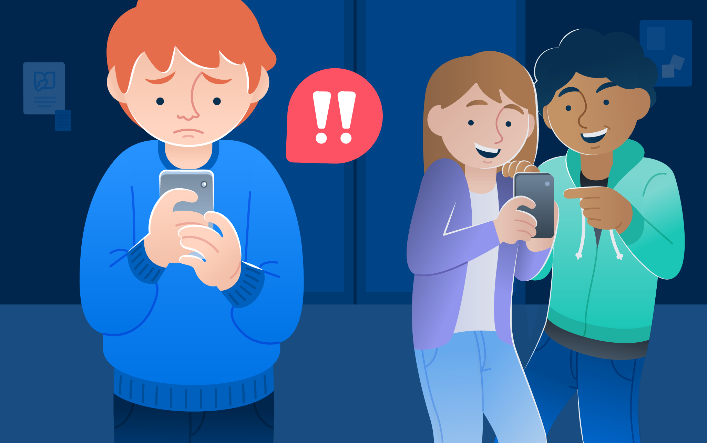
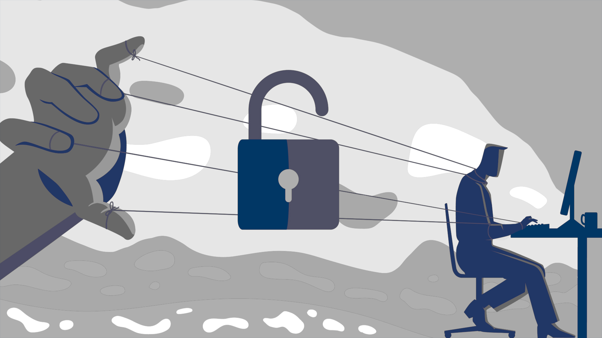
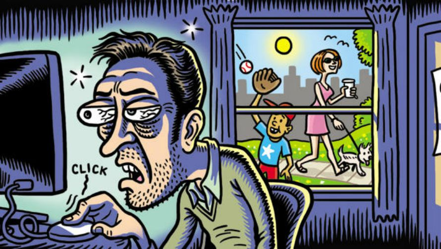
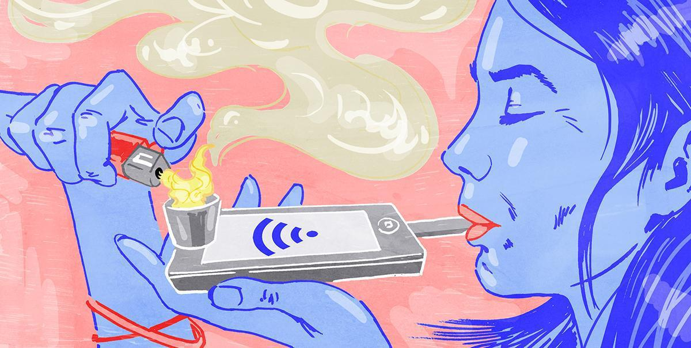
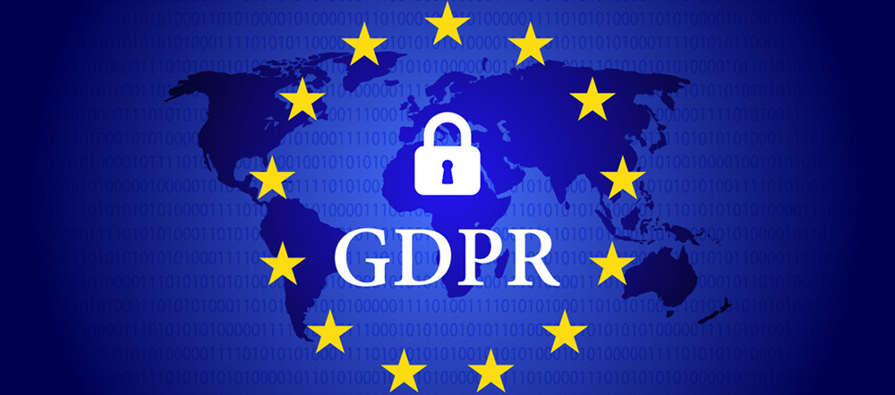

Capitolo 6:
1.Il mio tempo del utilizzio del mio telefono
| Ore | Tempo di utilizzo |
| 8 ore e 28 minuti | Supera il limete del utilizzio consigliato |
| Ore | Social |
| 5 ore e 19 minuti | Supera il limite del utilizzio consgliato |
| Ore | Videogiochi |
| 2 ore e 29 minuti | tempo distribuito bene ai Videogiochi |
2.CyberBullisma

Viviamo in un mondo sempre più connesso, dove internet è una risorsa incredibile per comunicare, imparare e condividere.
Le Fake News: Quando la Menzogna Corre Online
Viviamo in un mondo sempre più connesso, dove internet è una risorsa incredibile per comunicare, imparare e condividere.
Tuttavia, questa libertà digitale porta con sé anche delle insidie, tra cui una delle forme più subdole di violenza: il cyberbullismo.
Cos’è il Cyberbullismo?
Il termine “cyberbullismo” si riferisce a qualsiasi forma di molestia, minaccia, umiliazione o offesa che avviene attraverso strumenti
digitali come social network, chat, email, forum e messaggi istantanei.
A differenza del bullismo tradizionale, il cyberbullismo può
colpire la vittima in qualsiasi momento, rendendo difficile “staccare la spina” dal dolore.
Le Forme del Cyberbullismo
Il cyberbullismo può manifestarsi in vari modi:
-Insulti e minacce online, spesso pubblici e virali.
-Diffusione di foto o video imbarazzanti, a volte manipolati.
-Creazione di profili falsi per danneggiare la reputazione della vittima.
-Esclusione dai gruppi digitali, un modo subdolo per isolare socialmente una persona.
Le Conseguenze
Le vittime di cyberbullismo possono affrontare:
-Ansia e depressione.
-Diminuzione dell’autostima.
-Isolamento sociale.
In casi estremi, pensieri autolesionistici.
-Il dolore causato non è virtuale: è reale e profondo.
Cosa Possiamo Fare?
Educare, prevenire e intervenire sono le chiavi per combattere il cyberbullismo:
-Parla apertamente di questi temi, soprattutto con i più giovani.
-Segnala contenuti offensivi alle piattaforme e, se necessario, alle autorità.
-Sostieni chi è vittima, non restare un semplice spettatore.
-Promuovi un uso consapevole e rispettoso dei social media.
La rete è uno spazio potente, ma sta a noi decidere come utilizzarlo.
Il rispetto e l’empatia devono essere alla base di ogni interazione,
anche — e soprattutto — online. Combattere il cyberbullismo è una
responsabilità collettiva: scegliamo di essere parte della soluzione.
3.Fake News
Le Fake News: Quando la Menzogna Corre Online
In un mondo sempre più connesso, dove le notizie viaggiano alla velocità di un clic, la disinformazione ha trovato terreno fertile.
Le fake news, o notizie false, sono contenuti ingannevoli che vengono diffusi con l’intento di manipolare, influenzare o semplicemente generare clamore.
Possono presentarsi sotto forma di articoli sensazionalistici, post virali, video manipolati o meme apparentemente innocui, ma tutti condividono un elemento in comune: non sono veri.
Cosa Sono le Fake News?
Il termine fake news si riferisce a qualsiasi tipo di notizia deliberatamente falsa o distorta, creata per ingannare.
A volte si tratta di bufale inventate da zero, altre volte di notizie reali presentate in modo fuorviante.
Alcuni esempi comuni includono:
Titoli esagerati o ingannevoli (clickbait) usati per attirare visualizzazioni.
Teorie del complotto prive di prove.
Contenuti manipolati, come foto ritoccate o video decontestualizzati.
Propaganda politica o ideologica mascherata da informazione neutra.
Perché Le Fake News Hanno Successo?
Le fake news prosperano per vari motivi.
Prima di tutto, sfruttano le emozioni delle persone: paura, rabbia, indignazione.
Questo le rende facili da condividere, spesso senza verificarne l’attendibilità.
Inoltre, i social media permettono a chiunque di diventare un "giornalista" improvvisato, eliminando di fatto i filtri tradizionali dell’informazione, come la verifica delle fonti.
Un altro fattore è l’algoritmo: le piattaforme online tendono a mostrare contenuti simili a quelli che abbiamo già apprezzato, creando una “bolla” informativa dove vediamo solo ciò che conferma le nostre opinioni.
Questo fenomeno è noto come echo chamber, e può rafforzare convinzioni errate, alimentando la diffusione di fake news.
Le Conseguenze della Disinformazione
Le notizie false non sono semplici scherzi innocui: possono avere conseguenze reali e gravi.
In ambito sanitario, ad esempio, la diffusione di informazioni errate sui vaccini o sulle cure può mettere a rischio la salute pubblica.
In politica, le fake news possono influenzare le elezioni, creare sfiducia nelle istituzioni e dividere l’opinione pubblica.
Come Difendersi dalle Fake News
Contrastare la disinformazione richiede consapevolezza e spirito critico.
Ecco alcuni strumenti utili:
Verifica le fonti: chiediti chi ha scritto l’articolo, se il sito è affidabile e se ci sono prove a sostegno delle affermazioni.
Controlla le date e i dettagli: una notizia vecchia può essere ripubblicata come se fosse attuale.
Confronta più fonti: se una notizia è vera, è probabile che venga riportata anche da testate autorevoli.
Attenzione al linguaggio: titoli troppo emotivi o urlati spesso nascondono contenuti poco attendibili.
4.Attacchi di Social Engineering

Attacchi di Social Engineering: Quando l’inganno si traveste da persona
Attacchi di Social Engineering: Quando l’inganno si traveste da persona
Nel vasto universo della sicurezza informatica, spesso ci immaginiamo hacker che smontano codici, superano firewall e sfruttano vulnerabilità nei sistemi.
Ma c'è una tecnica molto più subdola – e in molti modi più insidiosa – che non si basa sulla tecnologia, ma sulle debolezze umane.
Stiamo parlando del Social Engineering, o ingegneria sociale: l'arte di manipolare psicologicamente le persone per ottenere accesso a informazioni sensibili, sistemi o risorse.
Cos’è il Social Engineering?
Il Social Engineering comprende una serie di tecniche utilizzate da malintenzionati per ingannare le persone e convincerle a rivelare dati personali, cliccare su link pericolosi, fornire accessi riservati o compiere azioni che possano compromettere la sicurezza di un sistema.
A differenza degli attacchi puramente tecnici, il social engineering si basa completamente sulla fiducia, sulla distrazione e sulle emozioni.
È un attacco diretto all’anello più debole della sicurezza informatica: l’essere umano.
Le Forme Più Comuni di Attacco
Ecco alcune delle tecniche più comuni:
Phishing: Il più noto. Consiste nell’invio di e-mail (o messaggi) falsificati che imitano comunicazioni ufficiali (banche, aziende, enti pubblici), spingendo la vittima a cliccare su link o a inserire dati sensibili su siti fasulli.
Spear Phishing: Una versione mirata del phishing, in cui il messaggio è personalizzato con dettagli reali sulla vittima, rendendolo molto più credibile.
Vishing (Voice Phishing): L’attacco avviene tramite telefonate. Il truffatore può fingersi un tecnico dell’assistenza, un operatore bancario o persino un collega.
Pretexting: L’attaccante crea una storia inventata (un “pretesto”) per ottenere informazioni. Ad esempio, può fingere di essere un giornalista o un investigatore per porre domande riservate.
Baiting: Il truffatore offre qualcosa di allettante (come una chiavetta USB trovata “per caso” o un download gratuito) per indurre la vittima a compiere
Tailgating: In un contesto fisico, si verifica quando una persona non autorizzata riesce ad accedere a un’area protetta semplicemente seguendo da vicino un dipendente legittimo.
Perché Funzionano?
Gli attacchi di social engineering hanno successo perché giocano su meccanismi psicologici profondamente radicati: la fiducia nell’autorità, il desiderio di aiutare, la fretta, la paura e la curiosità.
Un messaggio urgente che avverte “Il tuo account è stato bloccato!” spinge molte persone a reagire impulsivamente, senza prendersi un momento per riflettere.
Le Conseguenze
Un attacco riuscito può portare a conseguenze gravi, come:
Furto di identità
Accesso non autorizzato a sistemi aziendali
Perdite finanziarie
Diffusione di malware
Compromissione della reputazione
Nel contesto aziendale, anche solo un’e-mail aperta da un dipendente può mettere a rischio l’intera rete.
Come Difendersi
La difesa più efficace contro il social engineering non è un software, ma la consapevolezza.
Ecco alcune buone pratiche da seguire:
Non fidarti ciecamente di richieste insolite, anche se sembrano provenire da fonti familiari.
Verifica sempre l’identità del mittente, soprattutto se ti chiede di fornire informazioni sensibili.
Evita di cliccare su link sospetti o allegati provenienti da e-mail ambigue.
Fai formazione: nelle aziende, è fondamentale educare i dipendenti a riconoscere i segnali di un attacco.
Segnala ogni comunicazione sospetta al team IT o all’amministratore di sistema.
Gli attacchi di Social Engineering ci ricordano che, sebbene la tecnologia possa essere sicura, le persone devono essere formate e sempre vigili.
In un’epoca in cui l’informazione è potere, proteggere i propri dati non è solo un dovere tecnico, ma anche un atto di responsabilità personale e collettiva.
5.Dipendenza da Videogiochi

La dipendenza da videogiochi: Quando il gioco smette di essere solo un gioco
Oggi, i videogiochi sono diventati una parte fondamentale del nostro intrattenimento. Rappresentano passione, svago, cultura e competizione. Ogni giorno, milioni di persone, sia giovani che adulti, si tuffano in mondi virtuali sempre più realistici e coinvolgenti. Tuttavia, quando il tempo trascorso davanti allo schermo diventa eccessivo e inizia a interferire con la vita di tutti i giorni, il confine tra un passatempo sano e una vera e propria dipendenza può diventare molto sottile.
Che cos'è la dipendenza da videogiochi?
La dipendenza da videogiochi, conosciuta anche come Gaming Disorder, è stata ufficialmente riconosciuta dall'Organizzazione Mondiale della Sanità (OMS) nel 2018. Si tratta di un comportamento persistente o ricorrente legato al gioco digitale, caratterizzato da:
- Perdita di controllo sul tempo dedicato al gioco.
- Priorità data al gioco rispetto ad altre attività quotidiane, come scuola, lavoro e relazioni.
- Persistenza nel giocare, anche di fronte a conseguenze negative.
Questa condizione può portare a un notevole disagio nella vita della persona, influenzando negativamente la sua salute fisica, mentale e sociale.
Chi è più a rischio?
La dipendenza da videogiochi può colpire chiunque, ma ci sono alcuni fattori che aumentano il rischio:
- Adolescenti e preadolescenti, a causa della loro maggiore vulnerabilità emotiva.
- Persone con bassa autostima o difficoltà a relazionarsi nel mondo reale.
- Giocatori competitivi, attratti dai giochi online multiplayer, dove le classifiche e le sfide continue spingono a non “staccare mai”.
- Individui con disturbi preesistenti, come ansia, depressione o ADHD.
Segnali da non ignorare
Riconoscere i primi sintomi è fondamentale per intervenire in tempo. Alcuni segnali tipici includono:
- Isolamento sociale o perdita di interesse per attività che prima si amavano.
- Irritabilità, ansia o tristezza quando non si può giocare.
- Scarso rendimento scolastico o lavorativo.
- Insonnia, stanchezza cronica e trascuratezza dell’igiene personale.
Per i giovani, anche conflitti familiari frequenti o bugie sul tempo trascorso a giocare possono essere campanelli d’allarme.
Perché i videogiochi possono creare dipendenza?
I videogiochi sono progettati per essere coinvolgenti. Utilizzano meccanismi psicologici che stimolano il cervello a rilasciare dopamina, la sostanza chimica del piacere. Questo rende l’esperienza gratificante e, di conseguenza, difficile da interrompere. Inoltre, molti giochi online:
- Offrono ricompense continue (punti, livelli, oggetti).
- Sfruttano il senso di appartenenza a una comunità virtuale.
- Propongono sfide progressive, mantenendo sempre alta la motivazione.
Conseguenze della dipendenza
Oltre al deterioramento delle relazioni personali e del rendimento scolastico o lavorativo, la dipendenza da videogiochi può avere effetti sulla salute fisica:
- Disturbi del sonno
- Mal di testa frequenti
- Problemi posturali
- Alimentazione irregolare
A livello psicologico, può accentuare stati d’ansia, depressione o portare a una chiusura sociale sempre più marcata.
Come affrontare la dipendenza
La prima arma contro la dipendenza è la consapevolezza. Ecco alcune strategie per affrontarla:
- Stabilire limiti di tempo precisi per il gioco.
- Favorire attività alternative, come sport, hobby e incontri sociali.
- Dialogare con amici e familiari per non sentirsi soli.
- Consultare uno specialista, soprattutto se i sintomi diventano invalidanti.
Nel caso di adolescenti, è importante che i genitori mantengano una presenza attenta ma non oppressiva, offrendo sostegno e ascolto, e promuovendo un uso equilibrato della tecnologia.
I videogiochi sono una forma moderna e legittima di intrattenimento. Possono educare, connettere, divertire e persino curare. Tuttavia, come ogni attività, devono essere vissuti con equilibrio. Quando il gioco prende il controllo, diventa un problema. Riconoscere i segnali e intervenire in tempo può fare la differenza tra una passione sana e una dipendenza pericolosa.
6.Dipendenza dai Social

La dipendenza dai social network: Quando essere sempre connessi ci allontana dalla realtà.
Gli Attacchi Virus: Comprendere il Rischio Digitale
Attacco DoS (Denial of Service): Quando un Sito Viene Messo KO
Cosa Posso Fare per Difendermi dagli Attacchi Informatici?
La dipendenza dai social network: Quando essere sempre connessi ci allontana dalla realtà.
Siamo in un’epoca in cui scorrere lo schermo dello smartphone è diventato un gesto automatico, tanto naturale quanto respirare.
I social network – da Instagram a TikTok, da Facebook a X (ex Twitter) – ci tengono costantemente aggiornati, connessi e stimolati.
Ma cosa succede quando questo bisogno di essere “sempre online” si trasforma in una vera e propria dipendenza?
Che cos’è la dipendenza dai social network?
La dipendenza dai social può essere descritta come un uso eccessivo e incontrollato delle piattaforme sociali, che finisce per interferire negativamente con la vita di tutti i giorni.
Non si tratta solo di passare ore online, ma di sviluppare un legame emotivo e comportamentale che rende difficile, se non impossibile, staccarsi dallo schermo.
Chi ne è colpito avverte un bisogno costante di controllare le notifiche, postare aggiornamenti, ricevere like e leggere commenti.
Quando non riesce a farlo, può sentirsi ansioso, irrequieto o addirittura depresso.
Perché i social creano dipendenza?
I social network sono progettati per essere estremamente coinvolgenti.
Utilizzano meccanismi psicologici che stimolano il cervello a rilasciare dopamina, la sostanza chimica legata alla gratificazione e al piacere.
Ogni like, messaggio o notifica diventa una piccola “ricompensa”, spingendoci a tornare più volte al giorno.
Ecco alcuni motivi per cui i social sono così avvincenti:
Notifiche in tempo reale che ci fanno sentire importanti o desiderati.
Contenuti personalizzati che catturano costantemente la nostra attenzione.
Fear of Missing Out (FOMO): la paura di essere esclusi o di perdere qualcosa di significativo.
Confronto sociale: il desiderio di apparire perfetti, misurandosi con vite idealizzate.
Riconoscere una dipendenza dai social non è sempre semplice.
Ecco alcuni segnali che potrebbero indicare un problema:
Trascorrere ore e ore sui social, a scapito di lavoro, studio o relazioni.
Provare ansia o irritazione quando si è offline o si perde l’accesso a Internet.
Controllare il telefono in modo compulsivo, anche quando non ci sono notifiche.
Usare i social per sfuggire alla noia, alla solitudine o a problemi personali.
Dormire poco o male a causa del tempo passato online.
Le conseguenze
La dipendenza dai social network può portare a conseguenze reali:
Difficoltà di concentrazione e calo delle prestazioni a scuola o al lavoro.
Isolamento sociale, paradossalmente causato da un’eccessiva “connessione”.
Disturbi del sonno, spesso dovuti all’uso prolungato degli schermi, soprattutto di sera.
Bassa autostima, alimentata dal continuo confronto con le vite degli altri.
Ansia e depressione, in particolare tra i più giovani.
Come uscirne: strategie per un uso sano
Non è necessario rinunciare ai social, ma è importante imparare a usarli in modo consapevole.
Ecco alcune strategie utili:
Limitare il tempo trascorso sui social, magari utilizzando app che monitorano l’uso.
Disattivare le notifiche non essenziali per ridurre le interruzioni.
Programmare momenti offline, come “zone senza telefono” durante i pasti o prima di andare a letto.
Dedicarci ad attività reali, come sport, lettura o tempo con gli amici.
Prendersi una pausa dai social di tanto in tanto, per ricaricarsi mentalmente.
I social network non sono il nemico.
Sono strumenti potenti che possono connettere, ispirare e informare.
Ma come ogni strumento, vanno usati con equilibrio.
Quando l’online inizia a prendere il posto del mondo reale, è il momento di fermarsi e riflettere.
Perché la vera connessione, quella che conta davvero, spesso si trova al di fuori dello schermo.
7.Attacchi da Virus
Gli Attacchi Virus: Comprendere il Rischio Digitale
Nel nostro mondo digitale di oggi, i virus informatici sono tra le minacce più comuni e subdole per la sicurezza dei nostri dispositivi e dei dati personali. Ma cosa sono esattamente questi "virus" e come si comportano?
Un virus informatico è un tipo di software dannoso, noto come malware, progettato per infiltrarsi in un sistema, replicarsi e diffondersi ad altri dispositivi. Il termine "virus" è preso in prestito dalla biologia, proprio per la sua capacità di "infettare" e moltiplicarsi, spesso senza che l'utente se ne accorga.
Come agiscono i virus?
Una volta che un virus si è installato, può compiere diverse azioni dannose, tra cui:
- Cancellare o corrompere file importanti
- Rallentare le prestazioni del sistema
- Rubare informazioni personali, come password o dati bancari
- Disattivare software antivirus
- Diffondersi ad altri computer, tramite e-mail, chiavette USB o reti condivise
I principali tipi di virus
Ci sono molte varianti di virus informatici. Alcuni dei più comuni includono:
- Trojan (Cavalli di Troia): si travestono da programmi utili per ingannare l’utente
- Worm (vermi): si diffondono autonomamente in rete, senza bisogno dell'interazione dell'utente
- Ransomware: bloccano l’accesso ai dati e chiedono un riscatto per sbloccarli
- Spyware: spiano l’attività dell’utente e raccolgono informazioni
Come proteggersi?
Prevenire un’infezione da virus è fondamentale. Ecco alcune buone pratiche da seguire:
- Installare e aggiornare regolarmente un antivirus affidabile
- Evitare di cliccare su link sospetti o allegati non richiesti
- Mantenere il sistema operativo aggiornato
- Fare copie di backup dei dati più importanti
8.Attacco DoS Denaial of Service
Attacco DoS (Denial of Service): Quando un Sito Viene Messo KO
In un mondo sempre più connesso, è fondamentale mantenere i servizi online attivi e accessibili.
Tuttavia, una delle minacce più comuni che può mettere temporaneamente fuori uso un sito web o un’intera rete è l’attacco DoS, che sta per Denial of Service, ovvero “negazione del servizio”.
Ma cosa significa, esattamente?
Cos’è un attacco DoS?
Un attacco DoS è una tecnica utilizzata da hacker o cybercriminali per rendere un servizio online — come un sito web, un server o un’applicazione — inaccessibile agli utenti legittimi.
Questo avviene sovraccaricando il sistema con un’enorme quantità di richieste o dati, fino a farlo rallentare o addirittura bloccarsi completamente.
Immagina un negozio che può servire solo 10 clienti alla volta.
Se mille persone entrano tutte insieme, il negozio si paralizza.
L’attacco DoS funziona in modo simile, ma nel mondo digitale.
Come funziona?
Gli attacchi DoS possono essere eseguiti in vari modi, ma i più comuni includono:
Invio massiccio di traffico al sito o server, fino a esaurire le risorse (memoria, banda, CPU)
Sfruttamento di vulnerabilità del software per mandarlo in crash
Flooding di richieste: invio continuo e ripetuto di richieste finte per bloccare l’accesso agli utenti reali
Esiste anche una forma più avanzata e pericolosa di attacco, chiamata DDoS (Distributed Denial of Service), dove il traffico dannoso proviene da migliaia di dispositivi infettati in tutto il mondo (una rete chiamata botnet).
Perché vengono lanciati gli attacchi DoS?
Le motivazioni possono variare:
Dimostrazioni politiche o ideologiche (hacker attivisti o “hacktivisti”)
Ricatti verso aziende o organizzazioni
Distrazione per coprire attacchi più gravi (es. furto di dati)
Semplice vandalismo digitale
Come si può proteggere un sito web?
Anche se non possiamo eliminare del tutto il rischio, ci sono alcune strategie che possono aiutare a ridurre l'impatto di un attacco DoS:
- Utilizzare firewall e sistemi anti-DDoS per filtrare il traffico sospetto.
- Affidarsi a servizi di hosting scalabili, capaci di gestire picchi di traffico.
- Monitorare costantemente la rete per individuare anomalie in tempo reale.
- Aggiornare regolarmente i sistemi per chiudere eventuali vulnerabilità.
Gli attacchi DoS sono tra le minacce più comuni per i servizi digitali, spesso utilizzati per paralizzare siti web, creare disagi o causare danni economici.
La prevenzione e la preparazione sono fondamentali per garantire la continuità dei servizi online e proteggere le infrastrutture digitali in un mondo sempre più vulnerabile agli attacchi informatici.
9.Cosa posso fare per difendermi
Cosa Posso Fare per Difendermi dagli Attacchi Informatici?
Oggi, la nostra vita è sempre più intrecciata con il mondo online: comunichiamo, facciamo acquisti, gestiamo le nostre finanze e conserviamo informazioni preziose sui nostri dispositivi.
Per questo motivo, proteggersi dagli attacchi informatici è diventato essenziale, sia per le persone comuni che per le aziende.
Ma quali sono i passi concreti che possiamo intraprendere per difenderci?
1. Usa password forti e diverse
Le password deboli sono una delle prime vie d’accesso per i criminali informatici.
Ecco come proteggerti:
Crea password lunghe, mescolando lettere maiuscole, minuscole, numeri e simboli.
Evita di usare la stessa password per più account.
Considera l'uso di un password manager per gestirle in modo sicuro.
2. Attiva l’autenticazione a due fattori (2FA)
Anche se qualcuno riesce a scoprire la tua password, con la 2FA (autenticazione a due fattori) avrà bisogno di un secondo codice per accedere.
Questo codice viene spesso inviato via SMS o generato da un’app.
È una protezione in più che può salvarti da molti attacchi.
3. Fai attenzione a cosa clicchi
Molti attacchi iniziano con una semplice azione: cliccare su un link sbagliato.
Non aprire allegati o link sospetti nelle email.
Diffida di messaggi che richiedono dati personali o che ti mettono fretta.
Controlla sempre il mittente.
4. Aggiorna il tuo dispositivo e i programmi
Gli aggiornamenti non servono solo a migliorare le funzionalità, ma chiudono anche le vulnerabilità di sicurezza che gli hacker possono sfruttare.
Assicurati di mantenere aggiornati:
Il sistema operativo (Windows, macOS, Android, iOS).
I programmi, i browser e le app che usi frequentemente.
Il tuo antivirus.
5. Installa un antivirus affidabile
Un buon software antivirus può proteggerti da virus, malware, spyware e altri tipi di attacchi.
Ricorda di:
Tenerlo sempre aggiornato.
Eseguire scansioni regolari.
Non disattivarlo mai, nemmeno conrtemporaneamente.
6. Fai il backup dei tuoi dati
Se ti trovi di fronte a un attacco serio, come un ransomware, l'unico modo per recuperare i tuoi file è avere una copia di sicurezza.
Assicurati di eseguire backup regolari:
Su un hard disk esterno
Su un servizio cloud sicuro
7. Usa connessioni sicure
Stai attento a non inserire informazioni sensibili, come password o numeri di carta, quando sei connesso a reti Wi-Fi pubbliche non protette.
Se proprio devi farlo, utilizza una VPN (rete privata virtuale) per mantenere al sicuro la tua connessione.
Proteggersi dagli attacchi informatici non richiede di essere un esperto: bastano buone abitudini digitali, un po' di attenzione e gli strumenti giusti.
Ogni clic consapevole, ogni password sicura e ogni aggiornamento possono fare la differenza tra un sistema protetto e un'infezione digitale.
La sicurezza online inizia da te.
10.Legge sulla Privacy

La Legge sulla Privacy: Proteggere i Dati nell’Era Digitale
Ogni volta che navighiamo su un sito web, facciamo acquisti online o semplicemente usiamo un’app, lasciamo delle tracce digitali: il nostro nome, l’indirizzo email, la posizione, e i nostri gusti personali. Tutte queste informazioni si racchiudono in un concetto fondamentale: la privacy.
Ma chi si occupa di proteggere i nostri dati? E in che modo? Qui entra in gioco la legge sulla privacy.
Cos’è la legge sulla privacy?
La legge sulla privacy è un insieme di regole pensate per tutelare i dati personali delle persone. In altre parole, serve a garantire che le informazioni che ci riguardano vengano raccolte, utilizzate e conservate nel rispetto dei nostri diritti.
Un esempio significativo in Europa è il GDPR – Regolamento Generale sulla Protezione dei Dati, che è entrato in vigore nel 2018. Questo regolamento è applicabile in tutti i paesi dell’Unione Europea e rappresenta uno dei sistemi di protezione della privacy più avanzati al mondo.
Cosa sono i “dati personali”?
Secondo la legge, i dati personali sono tutte quelle informazioni che possono identificare una persona, anche in modo indiretto. Ecco alcuni esempi:
-Nome e cognome
-Indirizzo email
-Numero di telefono
-Posizione geografica
-Foto e video
-Codice fiscale
-Dati sanitari o finanziari
I principi fondamentali della legge sulla privacy
Leggi come il GDPR si fondano su alcuni principi chiave:
Trasparenza: le persone devono essere informate su chi raccoglie i dati e per quale motivo.
Consenso: i dati possono essere raccolti solo con il consenso dell’utente, a meno che non ci siano eccezioni previste dalla legge.
Limitazione della raccolta: si possono raccogliere solo i dati strettamente necessari.
Protezione dei dati: chi raccoglie i dati è responsabile della loro sicurezza.
Diritto all’accesso e alla cancellazione: ogni persona ha il diritto di sapere quali dati vengono trattati su di lei e può richiederne la modifica o la cancellazione (“diritto all’oblio”).
Cosa devono fare le aziende e i siti web?
Secondo la legge sulla privacy, ogni azienda o sito web che raccoglie dati personali ha alcune responsabilità fondamentali:
- Informare in modo chiaro gli utenti (ad esempio, attraverso una Privacy Policy)
- Richiedere il consenso per l'uso dei cookie e per il trattamento dei dati
- Conservare i dati in modo sicuro e solo per il tempo necessario
- Designare un Responsabile della Protezione dei Dati (DPO) quando richiesto
- Segnalare eventuali violazioni di sicurezza (data breach) entro 72 ore
I tuoi diritti come utente
Grazie alla legge sulla privacy, ogni cittadino gode di una serie di diritti importanti, tra cui:
- Diritto di sapere come vengono utilizzati i propri dati
- Diritto di opporsi al trattamento dei dati per scopi pubblicitari
- Diritto di portabilità: la possibilità di trasferire i propri dati da un servizio a un altro
- Diritto di cancellazione: richiedere la rimozione definitiva dei propri dati
La legge sulla privacy è uno strumento essenziale per garantire che i nostri dati personali non vengano utilizzati in modo improprio o senza il nostro consenso. In un mondo in cui la tecnologia avanza a passi da gigante, conoscere i propri diritti e comprendere come vengono protetti i nostri dati è il primo passo per navigare in sicurezza e consapevolezza.
↑